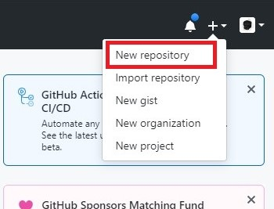
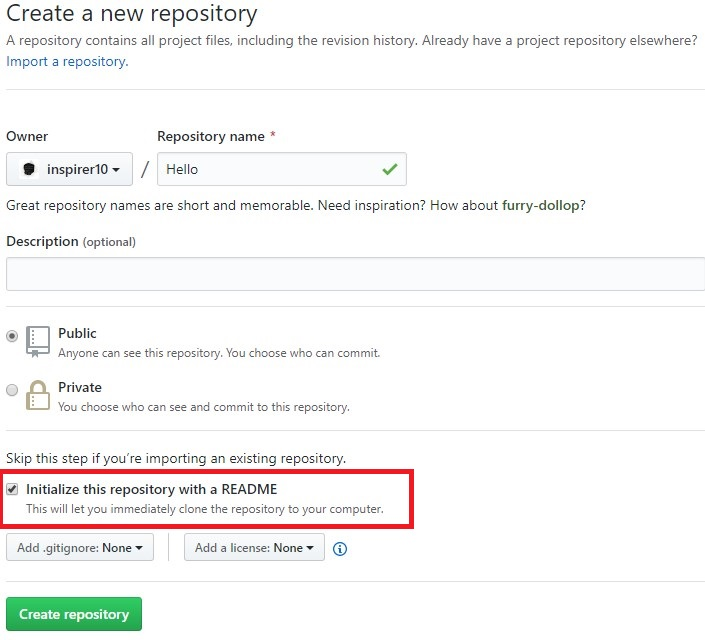
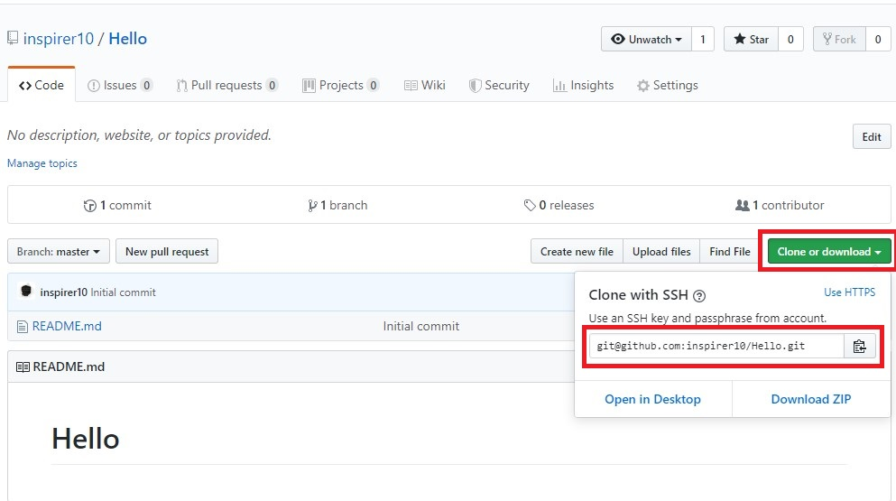

Dzisiaj pokażę Ci szybki i przyjemny sposób na stworzenie repozytorium na GitHubie
Pokażę Ci teraz sposób, który dodatkowo zadziała w sytuacji, kiedy dołączasz do toczącego się projektu.
Stosujemy go tylko w sytuacji, kiedy istnieje repozytorium zdalne, a nie istnieje lokalne na Twoim komputerze
Tym sposobem jest: klonowanie repozytorium.
Zacznij od stworzenia nowego repozytorium. Możesz do tego wykorzystać ikonę plusa, która znajduje się w prawym górnym rogu strony:

Przy zakładaniu repozytorium zaznacz opcję stworzenia pliku 'README.md':

Dzięki temu automatycznie zostanie zapisany pierwszy commit.
Po stworzeniu repozytorium skopiuj adres repozytorium zdalnego, adres znajdziesz po prawej stronie nad listą plików, pod guzikiem "Clone or download":

Następnie otwórz terminal w katalogu ze swoimi projektami.
Wykonaj komendę git clone adres-repozytorium oczywiście zamieniając "adres-repozytorium" na adres skopiowany przed chwilą.
Po sklonowaniu repozytorium zostanie utworzony katalog o nazwie takiej samej jak nazwa repozytorium.
Następnie do katalogu dodaj plik "package.json", który możesz pobrać poniżej.
Otwórz terminal w katalogu projektu i uruchom komendy: ' npm run init-project ' , a następnie: ' npm run watch '